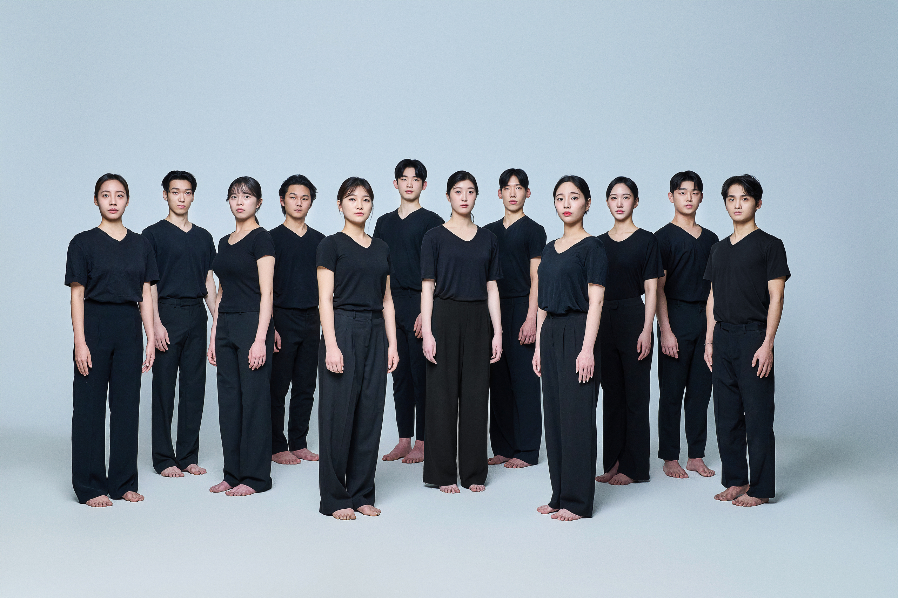

PERFORMANCE
컨템포러리 댄스Contemporary Dance
29 May 1913(Excerpt)
작품내용
Bryan Arias의 <29 May 1913>은 2020년 2월 29일 독일 Stadt Theater Darmstadt에서 초연하였으며 본 작품에서는 공연의 일부를 재구성하여 진행한다.
작품 <29 May 1913>은 1913년 5월 29일 파리 Champs-Elsees극장에서 Igor Stravinsky 음악에 Sergei Djagilev 안무작인 봄의 제전이 초연되었을 당시 불러 일으켰던 논쟁을 바탕으로 한다.
Stravinsky의 불협화음 적인 리듬과 고전 발레의 관습을 깨고 겉보기에 불균형 적인 Djagilev의 안무는
1913년 당시 관객들에게 예상하지 못한 또는 그들의 눈에 정상적이지 않은 장면이 나타난 것에 대한 불안, 분노와 공격적인 항의와 같은 강렬한 감정적인 반응을 불러 일으켰다.
안무가 Bryan Arias는 이 스캔들에 대해 전통과 관습을 깨뜨리고 새로운 무언가의 시작에 대한 당시 파리 관객들의 극단적인 반응에 끌림과 동시에 익숙해진 의식들과 현상 유지에 대한 의문을 제기하게 된다.
- 지도교수 |
- 이지영
- 음악 |
- Dmitri Savchenko-Belski
- 출연 |
- 권우진, 김소민, 김수민, 오현준, 정선화, 한지원
